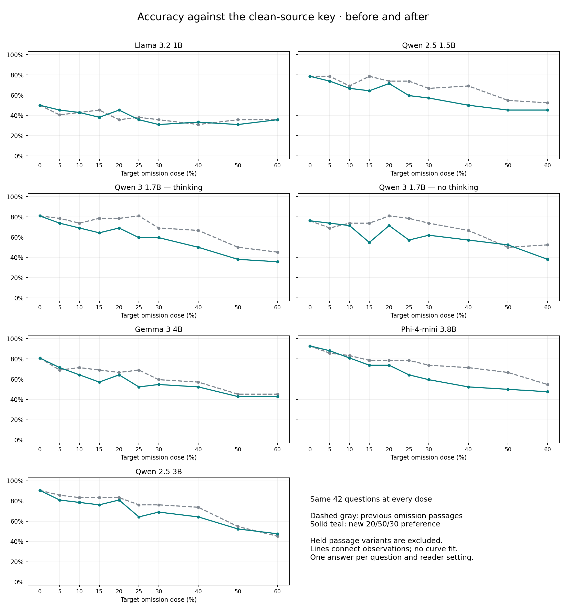
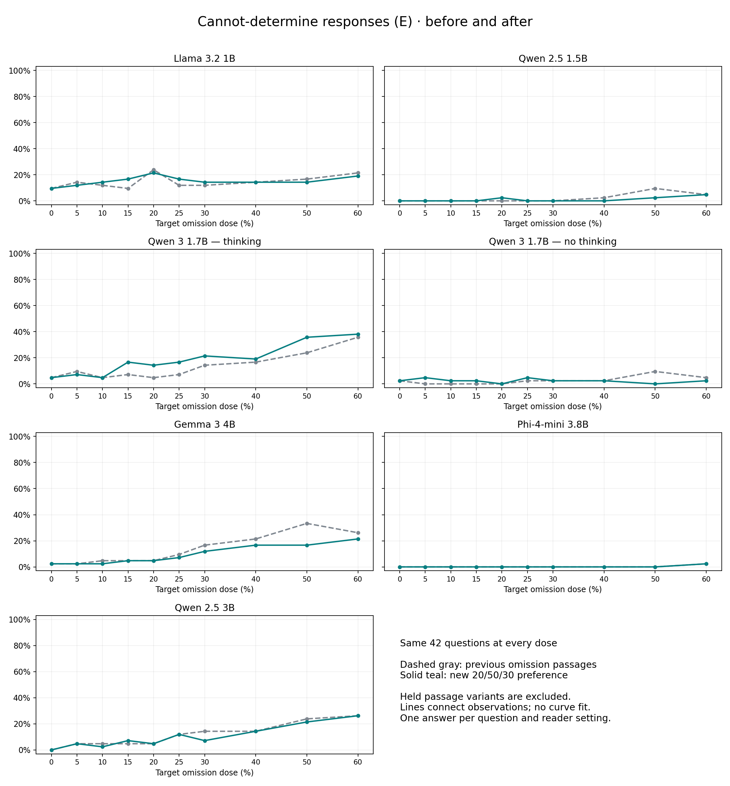

65 active from-scratch questions · 551 approved omission variants · 7 reader settings · 4,312 responses including clean baselines.
Published to the separate hosted research bank. The human pilot still uses its existing conditions; its 15% and 30% passages were already current. The new 40–60% texts preserve every earlier deletion from 30%. The 20/50/30 mix is an occurrence-based preference and is not achieved at the high doses.
3,220 fresh local requests; 1,092 exact prior requests reused. Model weights, server version, prompts, choice order, temperature 0, 8,192-token context and 2,500-token output cap match the prior experiment. Thinking uses the output cap. Only unmatched nonempty primary-reader answers use the original GPT-4.1-mini response-to-choice mapper.
Accuracy means agreement with the clean-source key. E may be appropriate for a corrupted passage; these results do not treat it as proof of failed comprehension. There is one response per question, dose and reader setting. Questions recur across doses, so the 4,312 responses are not independent samples. Lines connect observations; no significance or linear/logistic fit is claimed.
The rebuild changes the specific information removed as well as the omission mixture. Differences between releases therefore cannot be attributed to the word/phrase/clause proportions alone. The 20/50/30 preference applies across the full bank; the matched 42-question subset can have different achieved proportions.
Previous → new counts, out of the same 65 questions per reader at each rate. Correct means agreement with the clean-source key; E is shown separately.
| Reader | 15% correct | 30% correct | 15% E | 30% E |
|---|---|---|---|---|
| Llama 3.2 1B | 31 → 24 | 25 → 21 | 5 → 9 | 7 → 8 |
| Qwen 2.5 1.5B | 50 → 44 | 45 → 37 | 1 → 0 | 1 → 1 |
| Qwen 3 1.7B · thinking | 49 → 43 | 44 → 38 | 4 → 9 | 9 → 13 |
| Qwen 3 1.7B · no thinking | 44 → 38 | 43 → 39 | 0 → 1 | 1 → 1 |
| Gemma 3 4B | 47 → 40 | 42 → 35 | 3 → 4 | 11 → 7 |
| Phi-4-mini 3.8B | 54 → 49 | 50 → 43 | 0 → 0 | 0 → 0 |
| Qwen 2.5 3B | 55 → 49 | 50 → 44 | 2 → 3 | 8 → 4 |


Accuracy SVG · E-rate SVG · Comparison data · All model responses
Each entry is correct / wrong A–D / E / invalid. Denominators can vary across doses. The clean baseline includes all 65 questions.
| Reader | Clean | 5% | 10% | 15% | 20% | 25% | 30% | 40% | 50% | 60% |
|---|---|---|---|---|---|---|---|---|---|---|
| Llama 3.2 1B | 32 / 27 / 6 / 0 49.2% · n=65 | 27 / 30 / 7 / 0 42.2% · n=64 | 27 / 31 / 7 / 0 41.5% · n=65 | 24 / 32 / 9 / 0 36.9% · n=65 | 28 / 26 / 11 / 0 43.1% · n=65 | 22 / 34 / 8 / 0 34.4% · n=64 | 21 / 36 / 8 / 0 32.3% · n=65 | 18 / 33 / 8 / 0 30.5% · n=59 | 19 / 30 / 6 / 0 34.5% · n=55 | 16 / 25 / 8 / 0 32.7% · n=49 |
| Qwen 2.5 1.5B | 53 / 12 / 0 / 0 81.5% · n=65 | 50 / 14 / 0 / 0 78.1% · n=64 | 47 / 18 / 0 / 0 72.3% · n=65 | 44 / 21 / 0 / 0 67.7% · n=65 | 47 / 16 / 2 / 0 72.3% · n=65 | 40 / 23 / 1 / 0 62.5% · n=64 | 37 / 27 / 1 / 0 56.9% · n=65 | 31 / 27 / 1 / 0 52.5% · n=59 | 29 / 25 / 1 / 0 52.7% · n=55 | 21 / 26 / 2 / 0 42.9% · n=49 |
| Qwen 3 1.7B · thinking | 54 / 9 / 2 / 0 83.1% · n=65 | 49 / 11 / 4 / 0 76.6% · n=64 | 45 / 17 / 3 / 0 69.2% · n=65 | 43 / 12 / 9 / 1 66.2% · n=65 | 40 / 12 / 11 / 2 61.5% · n=65 | 41 / 13 / 9 / 1 64.1% · n=64 | 38 / 12 / 13 / 2 58.5% · n=65 | 28 / 22 / 9 / 0 47.5% · n=59 | 24 / 14 / 17 / 0 43.6% · n=55 | 17 / 14 / 18 / 0 34.7% · n=49 |
| Qwen 3 1.7B · no thinking | 48 / 16 / 1 / 0 73.8% · n=65 | 45 / 17 / 2 / 0 70.3% · n=64 | 45 / 19 / 1 / 0 69.2% · n=65 | 38 / 26 / 1 / 0 58.5% · n=65 | 43 / 22 / 0 / 0 66.2% · n=65 | 37 / 25 / 2 / 0 57.8% · n=64 | 39 / 25 / 1 / 0 60.0% · n=65 | 33 / 24 / 2 / 0 55.9% · n=59 | 30 / 25 / 0 / 0 54.5% · n=55 | 18 / 29 / 2 / 0 36.7% · n=49 |
| Gemma 3 4B | 55 / 9 / 1 / 0 84.6% · n=65 | 49 / 14 / 1 / 0 76.6% · n=64 | 47 / 16 / 2 / 0 72.3% · n=65 | 40 / 21 / 4 / 0 61.5% · n=65 | 41 / 20 / 4 / 0 63.1% · n=65 | 36 / 24 / 4 / 0 56.2% · n=64 | 35 / 23 / 7 / 0 53.8% · n=65 | 31 / 18 / 10 / 0 52.5% · n=59 | 25 / 20 / 10 / 0 45.5% · n=55 | 20 / 18 / 11 / 0 40.8% · n=49 |
| Phi-4-mini 3.8B | 60 / 5 / 0 / 0 92.3% · n=65 | 59 / 5 / 0 / 0 92.2% · n=64 | 53 / 12 / 0 / 0 81.5% · n=65 | 49 / 16 / 0 / 0 75.4% · n=65 | 49 / 16 / 0 / 0 75.4% · n=65 | 43 / 21 / 0 / 0 67.2% · n=64 | 43 / 22 / 0 / 0 66.2% · n=65 | 34 / 25 / 0 / 0 57.6% · n=59 | 29 / 26 / 0 / 0 52.7% · n=55 | 22 / 26 / 1 / 0 44.9% · n=49 |
| Qwen 2.5 3B | 60 / 5 / 0 / 0 92.3% · n=65 | 53 / 8 / 3 / 0 82.8% · n=64 | 51 / 12 / 2 / 0 78.5% · n=65 | 49 / 13 / 3 / 0 75.4% · n=65 | 50 / 11 / 4 / 0 76.9% · n=65 | 44 / 15 / 5 / 0 68.8% · n=64 | 44 / 17 / 4 / 0 67.7% · n=65 | 38 / 13 / 8 / 0 64.4% · n=59 | 31 / 14 / 10 / 0 56.4% · n=55 | 22 / 15 / 12 / 0 44.9% · n=49 |
Direct E choices and E assigned by the original response-to-choice mapper are separated here. Reaching the token cap does not automatically make an answer invalid.
| Reader | Responses | Mapped | Mapped E | Direct E | Invalid | Token cap reached |
|---|---|---|---|---|---|---|
| Llama 3.2 1B | 616 | 171 | 78 | 0 | 0 | 0 |
| Qwen 2.5 1.5B | 616 | 5 | 5 | 3 | 0 | 0 |
| Qwen 3 1.7B · thinking | 616 | 0 | 0 | 95 | 6 | 6 |
| Qwen 3 1.7B · no thinking | 616 | 0 | 0 | 12 | 0 | 0 |
| Gemma 3 4B | 616 | 0 | 0 | 54 | 0 | 0 |
| Phi-4-mini 3.8B | 616 | 0 | 0 | 1 | 0 | 0 |
| Qwen 2.5 3B | 616 | 0 | 0 | 51 | 0 | 0 |
1060 choices changed on comparable observations.